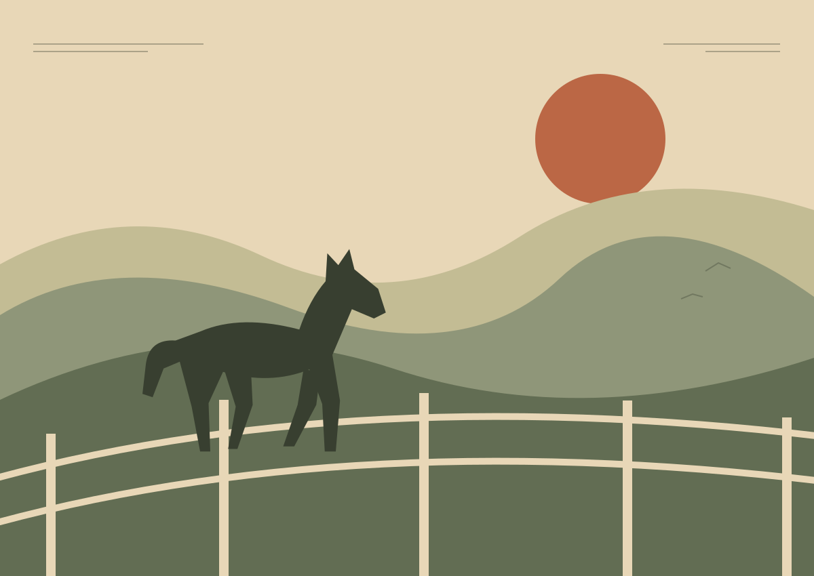

2 horses × $35 + dry camping $25
Prosser, Washington · Horse boarding & overnight stays
A stop for
the whole
haul.
Unload the horses. Park the rig. Choose where you sleep. Sheltered paddocks, dry camping and a stationary fifth wheel in Prosser, WA.
Request a stay Know the stop ↓
HORSES · RIGS · REST
The stop, at a glance
01
Where do the horses go?
Six individual paddocks, each with shelter and water access.
Horse boarding · $35 / horse / night ↗02
Where does the rig go?
One trailer + tow vehicle included per boarding reservation. Sleeping in the rig adds $25 / night for dry camping.
Placeholder — awaiting ownerPull-through layout, rig limits and turning clearance.RV / LQ dry camping ↗03
Where do you sleep?
Your own RV / LQ, the stationary fifth wheel ($110 / night), or accommodation elsewhere that you arrange.
Explore the fifth wheel ↗04
When can you arrive?
Placeholder — awaiting ownerArrival / checkout window and late-arrival arrangements.
Include your expected arrival time with your dates.
One night · two horses
Know the combined price.
2 horses × $35 + fifth wheel $110 + pet $20
Nightly base examples. Taxes and other approved charges are pending. One shared rig space per trailer group; parking is not added twice.
All rates & your stay estimate ↗A real look, before you unload
See the shelter. See the approach.
PLACEHOLDER PHOTOThe horses’ side of the stop
Wide shot, golden hour: paddocks with shelters and water points, rig parked beyond.
Before you haul
What to bring / What we need from you
Pack for your horses.
Bring your horses’ regular feed and care supplies; confirm nightly and weekly care duties before arrival. Monthly boarding is self-care.
For interstate travel, have a current Coggins (negative EIA test) and health certificate / Certificate of Veterinary Inspection (CVI) ready. USDA APHIS says most states require a CVI; negative EIA requirements and document validity depend on the destination state. Confirm your route’s requirements with your veterinarian and state animal-health officials.
General traveler guidance · USDA APHIS ↗
Placeholder — awaiting ownerProperty-specific horse papers, vaccination, separation and waiver requirements.Tell us about the haul.
- Arrival and departure dates, plus your expected arrival time
- Number of horses and any special care needs
- Total rig length, including tow vehicle, and number of trailers
- Sleep in your rig, in the fifth wheel, or elsewhere
- Dogs / other household pets, adults and children
- Your name and a way to reach you for confirmation
For dry camping, bring your own RV water and power arrangements. There are no electrical, sewer or RV water hookups.
Before the next stretch
Questions from the road.
When can I arrive or leave?
Placeholder — awaiting ownerCheck-in / checkout windows, late arrivals and off-hours contact. Include your expected arrival time in the request.
Can I bring my dog?
The fifth wheel allows up to two household pets, with a $20 per pet, per night fee. Placeholder — awaiting ownerDog rules for camping and boarding, leash / containment policy and any restrictions.
How large are the stalls or paddocks?
Horses use individual sheltered paddocks with water access. Placeholder — awaiting ownerPaddock dimensions, shelter dimensions and gate widths. No enclosed stall accommodation is confirmed.
Is turnout available?
The brief describes a small turnout pasture. Placeholder — awaiting ownerTurnout schedule, supervision, access conditions and whether it is included.
Who is the local vet or farrier?
Placeholder — awaiting ownerLocal veterinarian, emergency coverage and farrier contacts.
Are there RV hookups?
No. RV / living-quarters camping is dry camping: no electrical, sewer or RV water hookups. The stationary rental fifth wheel has its own utilities; these are not camping hookups.
How do I get here from I-82?
Placeholder — awaiting ownerI-82 exit, driving distance, exact address, entrance map and large-rig route. No route or travel time is confirmed.
Can I pull straight through with my rig?
Placeholder — awaiting ownerPull-through layout, turning clearance, maximum rig length and detached-trailer rules.
Who feeds and cleans for my horse?
Monthly boarding is self-care. Placeholder — awaiting ownerNightly / weekly feed, water checks, cleaning, bedding, turnout and emergency care duties.
What if my plans change?
Placeholder — awaiting ownerDeposit, payment, cancellation, refund, no-show and damage terms.
Dates. Horses. Rig. Rest.
Put your stop together.
Prepare an availability request. No space is held in this preview.